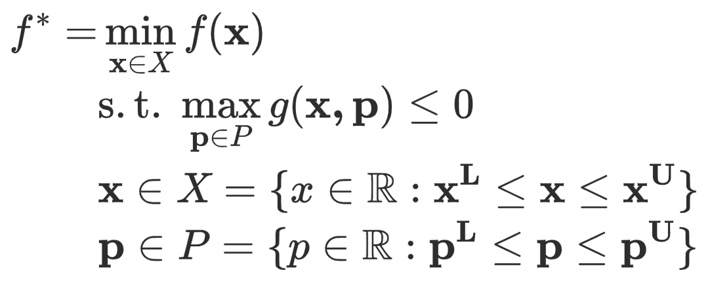
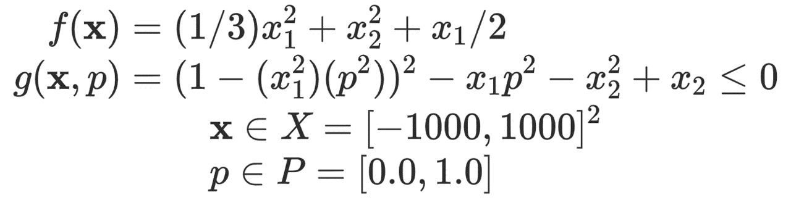

Solving Semi-Infinite Programming
Matthew Wilhelm Department of Chemical and Biomolecular Engineering, University of Connecticut
Using EAGO to solve a SIP
Semi-infinite programming remains an active area of research. In general, the solution of semi-infinite programs with nonconvex semi-infinite constraints of the below form are extremely challenging:

EAGO implements three different algorithm detailed in [1,2] to determine a globally optimal solution to problems of the above form. This accomplished using the sip_solve function which returns the optimal value, the solution, and a boolean feasibility value. To illustrate the functions use, a simple example is presented here which solves the below problem:

using EAGO, JuMP
# Define semi-infinite program
f(x) = (1/3)*x[1]^2 + x[2]^2 + x[1]/2
gSIP(x,p) = (1.0 - (x[1]^2)*(p[1]^2))^2 - x[1]*p[1]^2 - x[2]^2 + x[2]
x_l = Float64[-1000.0, -1000.0]
x_u = Float64[1000.0, 1000.0]
p_l = Float64[0.0]
p_u = Float64[1.0]
sip_result = sip_solve(SIPRes(), x_l, x_u, p_l, p_u, f, Any[gSIP], abs_tolerance = 1E-3)
println("The global minimum of the semi-infinite program is between: $(sip_result.lower_bound) and $(sip_result.upper_bound).")
println("The global minimum is attained at: x = $(sip_result.xsol).")
println("Is the problem feasible? $(sip_result.feasibility).")Semi-infinite solver
EAGO.SIPProblem — Type SIPProblemStructure storing problem information for the solution routine.
EAGO.SIPResult — TypeSIPResultStructure storing the results of the SIPres algorithm.
EAGO.SIPRes — TypeSIPResSpecifies that the SIPRes algorithm which implements Algorithm #1 of Djelassi, Hatim, and Alexander Mitsos. "A hybrid discretization algorithm with guaranteed feasibility for the global solution of semi-infinite programs." Journal of Global Optimization 68.2 (2017): 227-253 should be used.
EAGO.SIPResRev — TypeSIPResRevSpecifies that the SIPResRev algorithm which implements Algorithm #1 of Djelassi, Hatim, and Alexander Mitsos. "A hybrid discretization algorithm with guaranteed feasibility for the global solution of semi-infinite programs." Journal of Global Optimization 68.2 (2017): 227-253 should be used.
EAGO.SIPHybrid — TypeSIPHybridSpecifies that the SIPHybrid algorithm which implements Algorithm #2 of Djelassi, Hatim, and Alexander Mitsos. "A hybrid discretization algorithm with guaranteed feasibility for the global solution of semi-infinite programs." Journal of Global Optimization 68.2 (2017): 227-253 should be used.
EAGO.get_sip_optimizer — Functionget_sip_optimizerSpecifices the optimizer to be used in extension t::EAGO.ExtensionType with algorithm alg::AbstractSIPAlgo in subproblem s::AbstractSubproblemType via the command get_sip_optimizer(t::ExtensionType, alg::AbstractSIPAlgo, s::AbstractSubproblemType).
EAGO.build_model — Functionbuild_modelCreate the model and variables used with extension t::EAGO.ExtensionType in algorithm a::AbstractSIPAlgo in subproblem s::AbstractSubproblemType via the command build_model(t::ExtensionType, a::AbstractSIPAlgo, s::AbstractSubproblemType, p::SIPProblem).
EAGO.sip_llp! — Functionsip_llp!Solves the lower level problem for the ith-SIP used with extension t::EAGO.ExtensionType in algorithm a::AbstractSIPAlgo in subproblem s::AbstractSubproblemType via the command sip_llp!(t::ExtensionType, a::AbstractSIPAlgo, s::AbstractSubproblemType, ..., i, tol).
EAGO.sip_bnd! — Functionsip_bnd!Solves the bounding problem for the ith-SIP used with extension t::EAGO.ExtensionType in algorithm a::AbstractSIPAlgo in subproblem s::AbstractSubproblemType via the command sip_bnd!(t::ExtensionType, a::AbstractSIPAlgo, s::AbstractSubproblemType, ..., i, tol).
EAGO.sip_res! — Functionsip_res!Solves the restriction problem for extension t::EAGO.ExtensionType in algorithm a::AbstractSIPAlgo in subproblem s::AbstractSubproblemType via the command sip_res!(t::ExtensionType, a::AbstractSIPAlgo, ...).
EAGO.sip_solve — Functionsip_solveSolve an SIP with decision variable bounds x_l to x_u, uncertain variable bounds p_l to p_u, an objective function of f, and gSIP seminfiniite constraint(s).
- Mitsos A (2009). Global optimization of semi-infinite programs via restriction of the right-hand side. Optimization, 60(10-11):1291-1308.
- Djelassi, Hatim, and Alexander Mitsos. A hybrid discretization algorithm with guaranteed feasibility for the global solution of semi-infinite programs. Journal of Global Optimization, 68.2 (2017): 227-253 should be used.